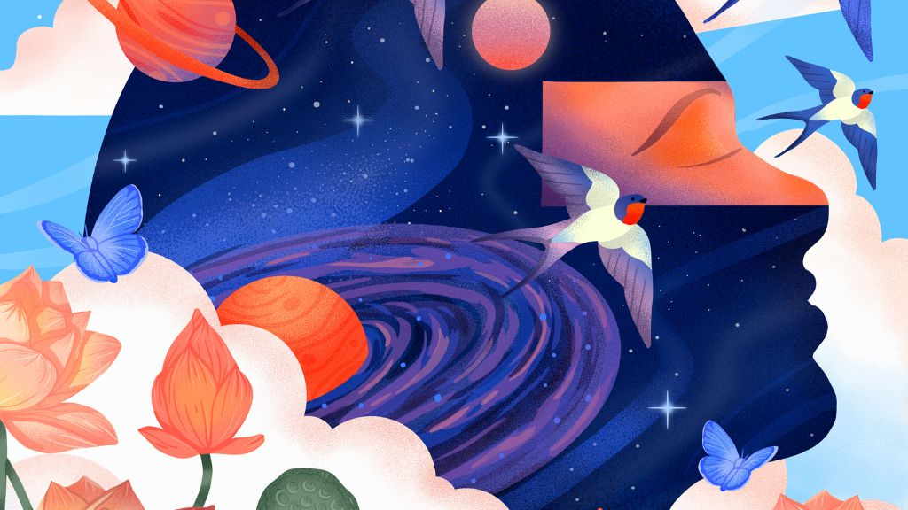

“Graceland” — A Collaboration Built on Trust, Restraint, and Feeling

The following feature is now included in our online magazine which is also available in print.
Issue #13
Online Magazine | Print Magazine“Graceland” is more than just a song; it is a union of different artistic expressions, each adding something vital and essential to its emotional landscape. At its core, it is a song about trust, trust in collaboration, trust in vulnerability, and trust in restraint.
Singer-songwriter Audrey Karrasch, a resident of Los Angeles, California, and a contestant on The Voice USA, has a unique gift for emotional clarity in her song. Her voice has a ring of truth that is both natural and unforced, making her a great contributor and co-writer for the song. As a collaborator and co-writer, Audrey did not just perform the song; she helped shape it. Her involvement with the song is a testament to her trust in its emotional core and her effort to imbue it with warmth, playfulness, and a sense of depth that is lived in. Her involvement with the song has imbued it with a sense of humanity that is difficult to manufacture or force.
The song began with William Kalmer’s lyrical ideas and original harmonies, which formed the emotional base upon which the rest of the song rested. William’s writing process is based upon honesty and restraint, creating space for vulnerability rather than defining it. The process is not about defining the feeling, but about letting it be. This process permeates every line and harmony, making the song what it is: a beacon of authenticity.
South African film composer Edward George King, of King Music, produced and reimagined the musical core of the song. A composer of great emotional nuance and precision, Edward has helped to establish the emotional tone of some of South Africa’s most important films. His work is always about storytelling, never spectacle. A quality that was crucial to “Graceland.”
He reworked the composition as a felt piano piece, one that is infused with an extraordinary sensitivity. By rethinking the musical arrangement and reconfiguring the architecture of sound, Edward repositioned the piece as something more intimate and alive. The production is never overwhelming, always breathing, always listening, always leaving room. By rethinking the emotional and sonic qualities of the piece, Edward gave “Graceland” the form it has today. Without his skill, the song would not exist in the form it does today.
“Graceland” is set in a visual and emotional world, one that is open to finding something of your own within it. A recollection. A recognition. A feeling that surfaces unexpectedly. It is not a song that tells you what to feel. It is a space in which feeling can be found.
This dispatch was last updated on March 2, 2026